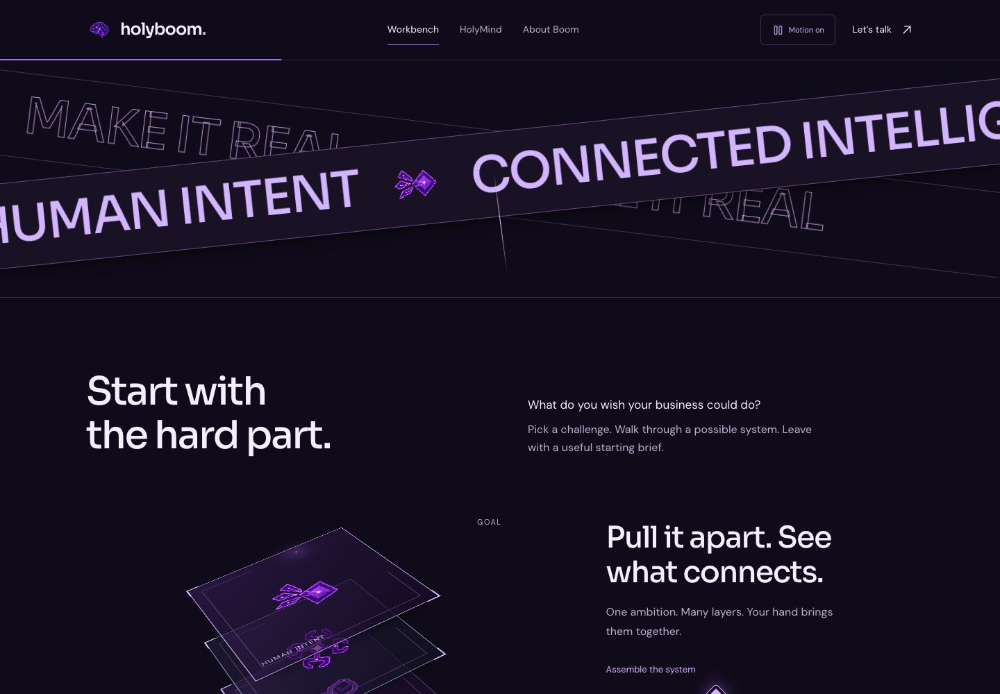
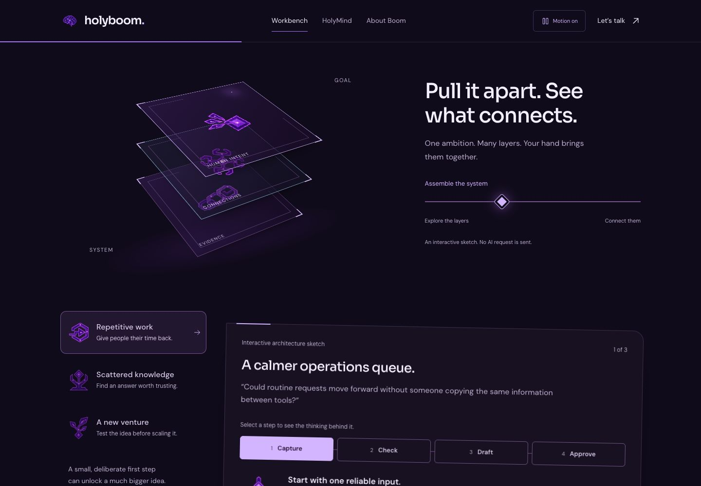
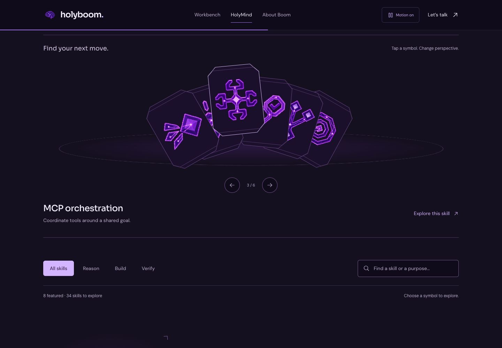
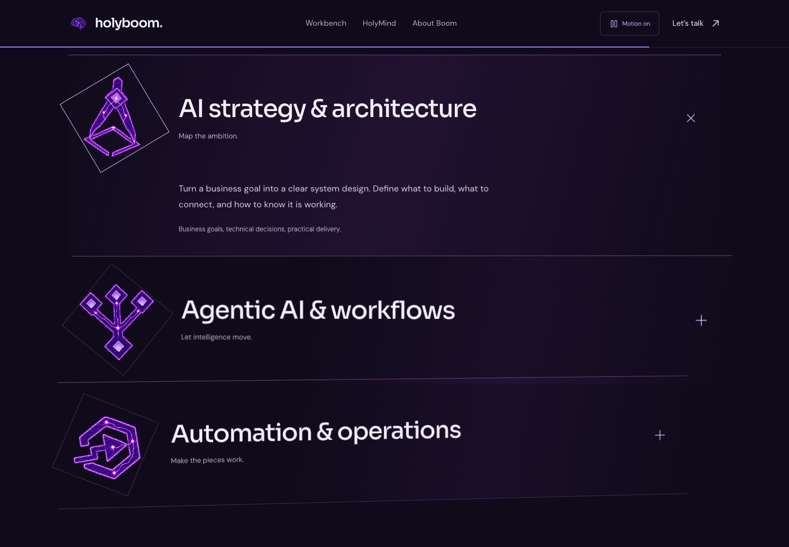
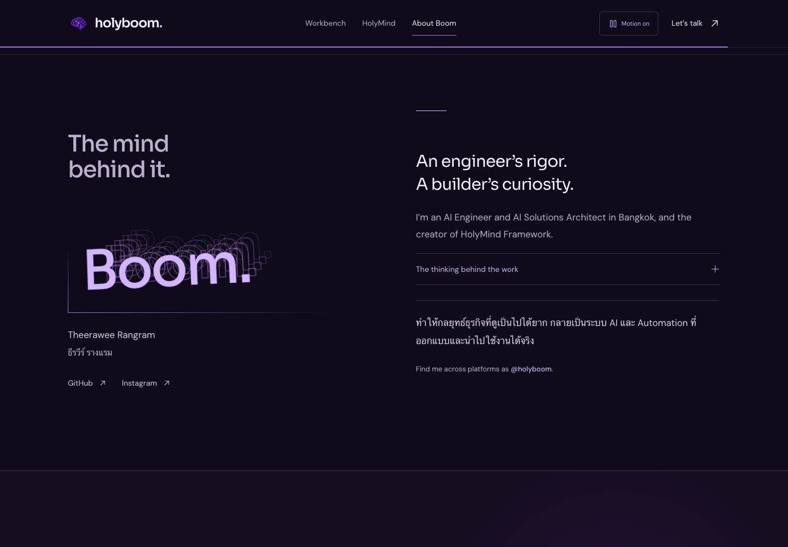
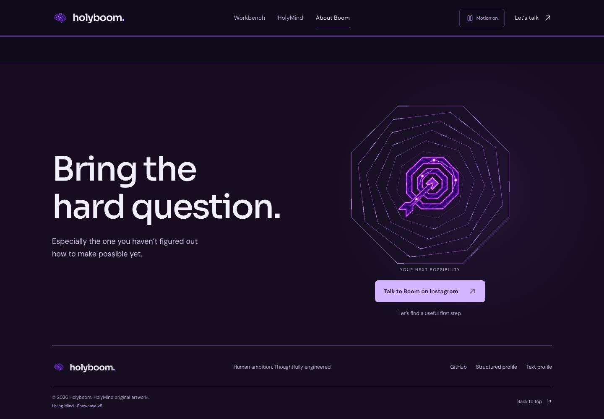
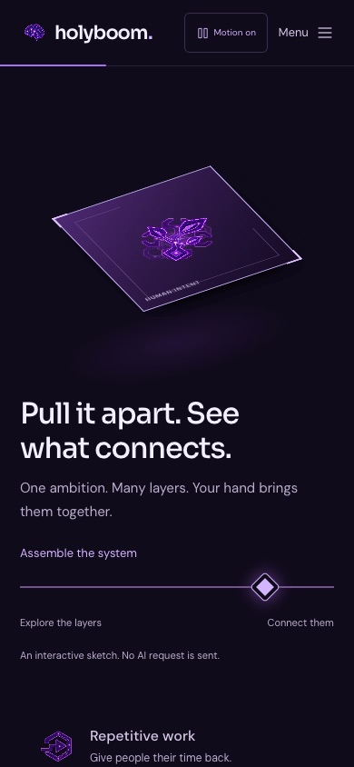
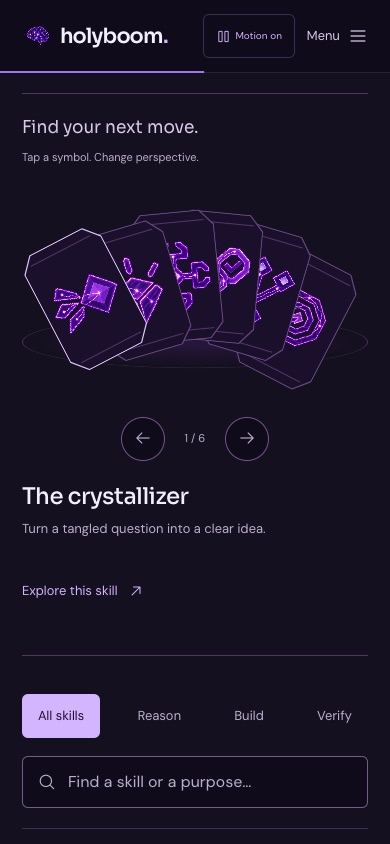
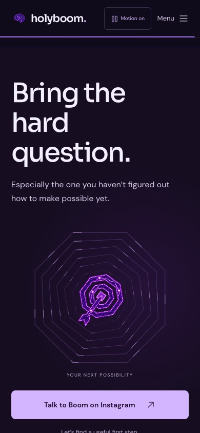

One identity.
Six new experiences.
Showcase v5 extends the approved Living Mind hero and orbital journey. Every screen below was captured from the published website with the original pixel-neon artwork.
All new showcase checks passed. The existing 31-check regression suite also passed on the live URL in WebKit. No captured page errors or horizontal overflow at the checked 320–1440 px viewports.
Browser-engine and emulated-touch testing, not a physical iPhone performance or battery certification.
Live browser recording with scripted scroll, slider and skill-selector interactions. No artwork or motion mockups were generated for this recording.

The six scenes






Mobile WebKit



Retained, not replaced
The electric brain, original orbital chapter, 34-skill gallery, three workbench scenarios, focus behavior, contact destinations and shared Motion switch remain. No new runtime library, sound, live AI execution or analytics was added.
Try the assembly scene →